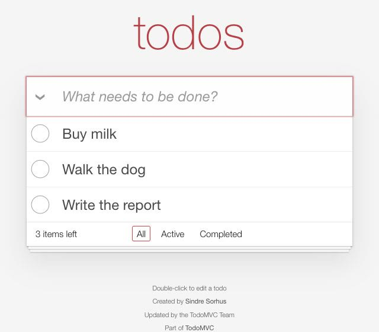
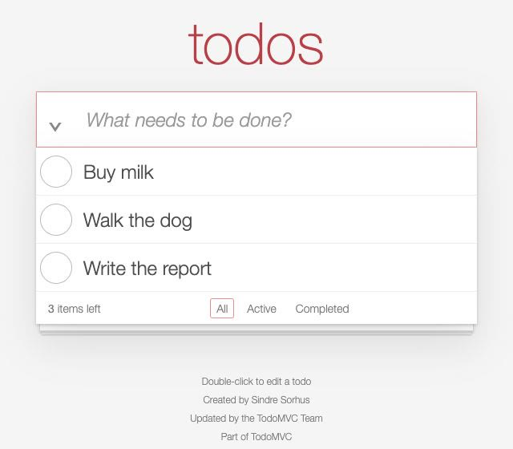
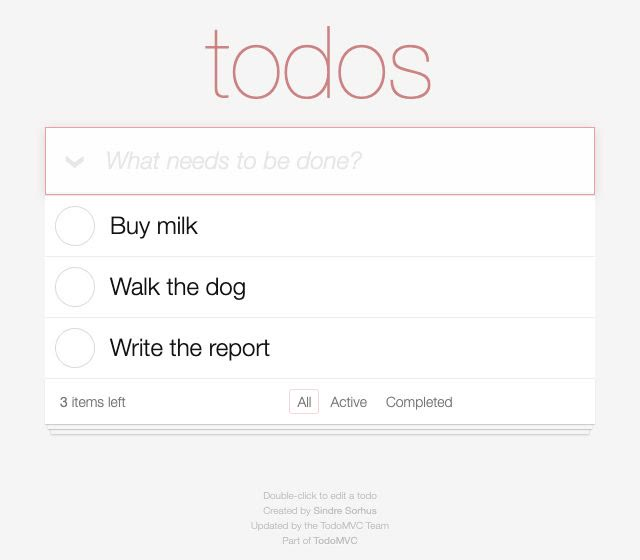
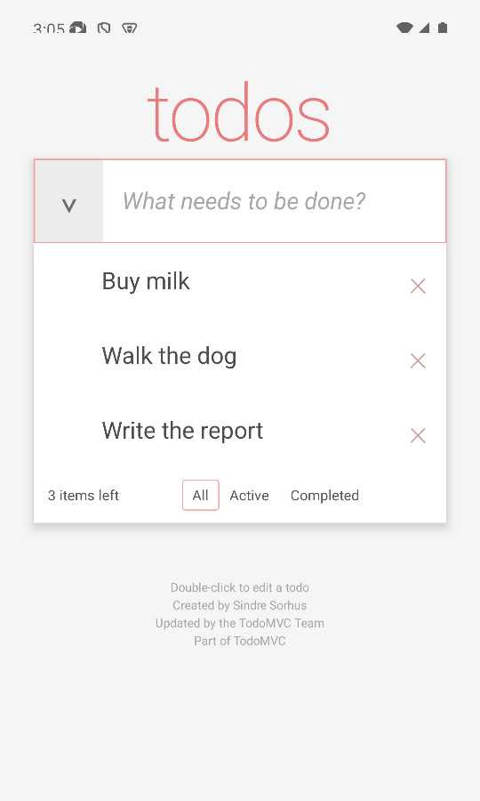
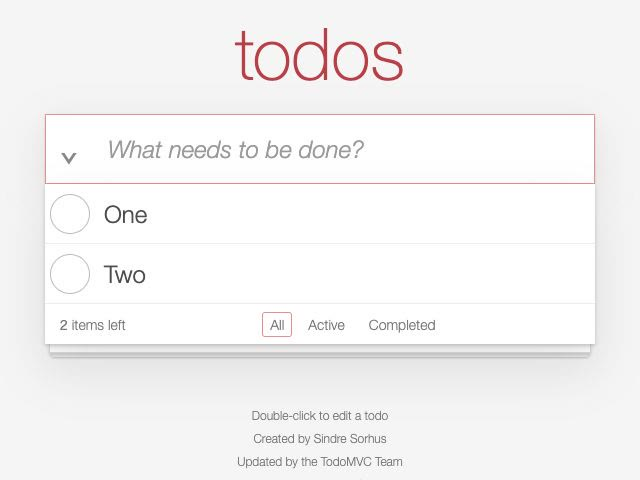
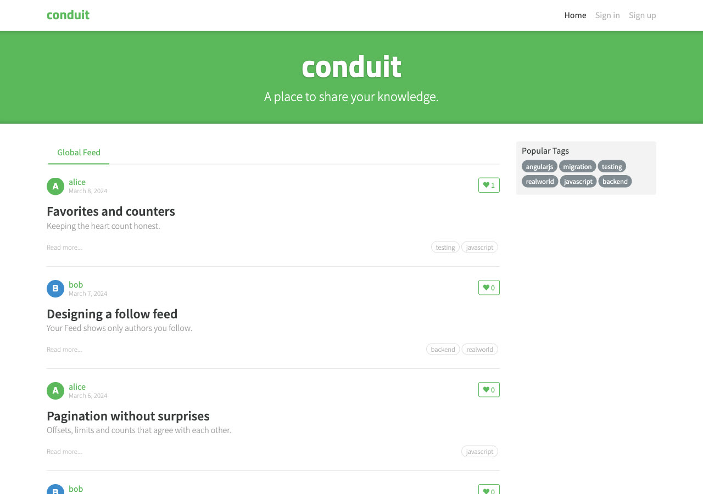

An AI rebuilds your app from plain English tests in a new stack, even as a native Android app, and Kane CLI proves every behavior still matches the original.
Its own summary, with no evidence attached.
Every claim checked, with a screenshot for each step.




“The screenshots show the app correctly displayed one item after the first add and two items after the second add.”
The red was Kane's own run missing a stored value. Theseus reruns failures like this before the agent hears about them, so nobody rewrites code that already works.
The certificate now counts it as failed on the original, so no rebuild gets credit for it. That is why every rebuild shows a single miss in the same place.

The agent skipped the required step to read and save the second counter after adding “Two.” The screenshots show the app correctly displayed one item, then two.
Read the visible counter immediately after adding “Two” and save that text before the final verification.
and if Kane blames its own run, a rerun comes first

Sign in, articles, comments, follows and favorites, with its own API and storage. Before every Kane run, POST /__theseus/reset restores the same seed, so runs never see each other's writes.